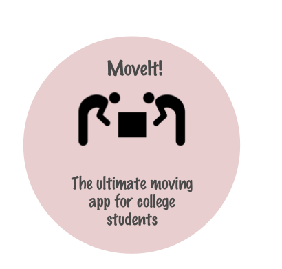

a mobile app that streamlines the process of moving in to new cities in the US.
MoveIt is a mobile app that helps students (typically out-of-state or international students) who might not have anyone to help them move-in when they first travel to US college towns and cities. The app does this by facilitating connections with existing students in these cities to provide moving services and also has a virtual marketplace for buying used goods and furniture.
While empathy is a core requirement in most design philosophies this particular problem demanded the utmost level of empathy to the user. Users face varying levels of stress from medium to extremely high during different stages of the moving-in process, so this app had to alleviate that stress as much as possible and not induce any further stress.
Another important factor to be consider was reducing the steps involved. Moving-in involves making many decisions, often repeatedly. The app had to balance the number of decisions involved with fast planning. It achieves this by leveraging a unique crowdfunded pricing algorithm to streamline purchase decisions. In short, the app oozes minimalistic design.
As one reads the story behind this project and looks at the various perspectives I have offered, it will become clear that this is not a random app. It’s based on my own personal struggles. In order to evoke strong emotions in the reader and enable them to empathize with users, I worked hard on storytelling to deliver a powerful rhetoric and inspire people to reach out and help others.
Defining the problem
Having moved to the US only recently (in Fall 2016), to a place where I knew no one, I experienced first-hand the problem of moving-in. Hunting for an apartment, dealing with ironclad US rental agreements, and finding furniture were harder than they should have been. Maybe God took pity on me, or it could have been sheer luck, but a week into my horror-ride, an old friend I hadn’t met or even spoken to in 12 years came out from nowhere and offered to help me settle in. A week of sleeping on the floor with only my jeans and a couple of sweatshirts to act as a blanket had finally come to an end.
Talking to others, mostly out-of-state and international students, about their own experiences, made me realize that this was a common problem — one without a permanent solution. They too had such challenges and it took 3–4 weeks, some even months to finally settle in and call a place “home”. The crux of the problem was that there was no one place which offered cheap and safe moving services and a marketplace where one could buy reliable second-hand furniture. This made me turn away from frustrations towards the sketching board, feverishly working on a solution. It fueled my desire to become a designer.
Market research
I took a look at 4 direct competitors who were offering similar services or platforms to see what I could offer as an improvement.
Sketching Alternatives
As I went about brainstorming potential solutions, I came up with the following ideas. They ranged from simple to simply wild ideas to solve this problem.
To narrow down the scope and add some perspectives to the individual steps involved, I walked users through the processes that I envisioned each of these ideas as consisting of. Based on the feedback I received, I drew up a more detailed set of steps for each idea. This is what I came up with.
User interviews and personas
The most important part of this product is, of course, the user. So, I set about talking to potential users of MoveIt — international students and out of state students. Their concerns and experiences provided useful insights that drove design decisions. The output from the interviews were personas that shed light on user needs and behaviors that I would hope to incorporate in the app.
Paper Prototype
As the problem became more defined and user needs more relevant, it was time to set about focusing on a preliminary solution. The user needs, as captured during interviews were:
Preliminary Design
The preliminary solution was a mobile app that would consist of three separate features that would cater to each of these user needs:
User Testing
The next step was to build a paper prototype of the app, test it on users and get their feedback to eventually drive design decisions.
Design Decisions
After showing users the paper prototype, users felt that there were too many moving parts to the app. They felt that booking a U-Haul truck was fairly easy without the app and that adding that feature would not be required. So, when making the final prototype, I decided to remove it entirely.
Users enjoyed the bargaining push notifications. It was especially useful for introverted users who felt that American bargaining could be somewhat aggressive. Additionally, it helped some international students overcome the language barrier by providing an alternative to verbal/in-person bargaining.
Users also praised the crowdsourced price range for the items. There were some concerns from buyers who felt that they could not trust the system entirely, but praised the transparency of the system.
Hi-Fi Prototype
Based on the feedback provided, I made the final hi-fi prototype using Sketch and Invision.
Who will use it
As mentioned previously, the target audience for this app are college students who are either out-of-state or international.
The app seeks to disrupt the moving industry by offering students the opportunity to make some money by signing up as human labor to help their fellow students move into their houses. By leveraging the strength and sense of community that student groups often possess, MoveIt offers secure and economical forms of moving assistance as well as a marketplace for reliable products offered by students themselves.
On the app, users can sign up either as:
The Business side of things
In order to get people interested there needs to be an incentive. However, it is also important to note that the reason this app is being developed in the first place is to offer competitive pricing and secure transactions. To achieve that, there will be two decisions made from a business perspective: